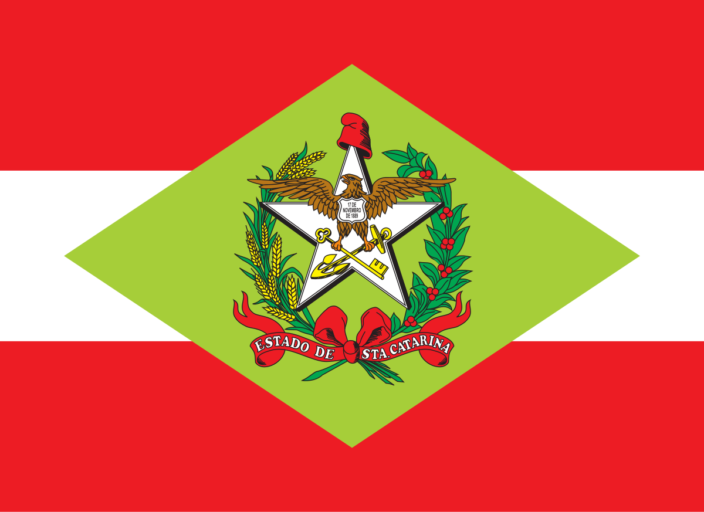
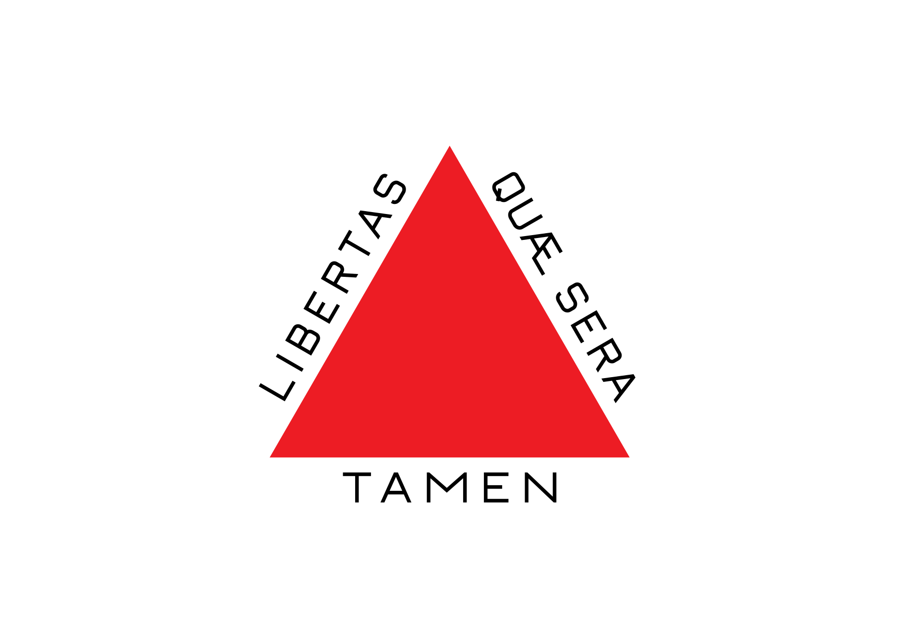
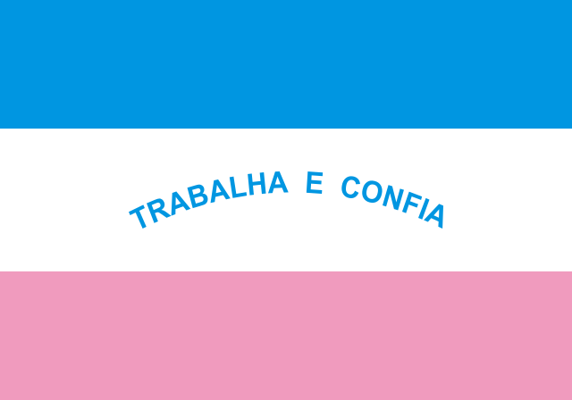
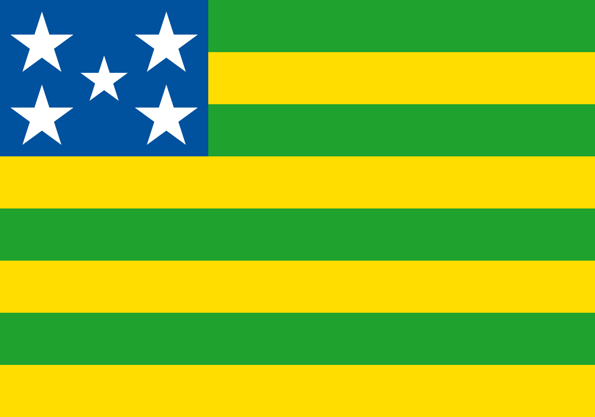
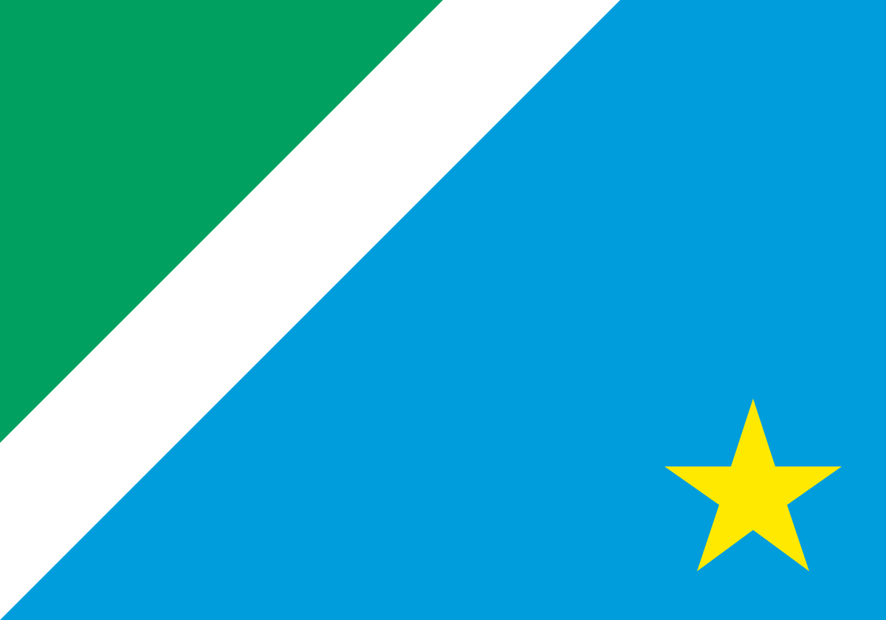

Agrinho: do campo à cidade, colhendo oportunidades
Olá, visitante curioso! 👋
Você já ouviu falar do Programa Agrinho? Talvez tenha visto por aí, mas será que conhece bem o que fazemos e como impactamos a sociedade? 🤔
Hoje, queremos te levar para um tour pelos nossos objetivos e contribuições. Vamos explorar juntos como o Programa Agrinho está fazendo a diferença, desde a educação até o desenvolvimento sustentável, e como estamos conectando o campo e a cidade de maneiras surpreendentes!
Fique com a gente e descubra tudo o que estamos realizando para tornar o mundo um lugar melhor. Vamos nessa? 🌱🚀
Como o agrinho surgiu?
O programa começou como uma iniciativa de educação ambiental, mas ao longo dos anos, expandiu-se para abordar uma variedade de temas, incluindo ética, saúde, segurança, e cidadania.
Com o tempo, o Agrinho se tornou uma referência nacional, impactando milhares de estudantes e professores por meio de atividades pedagógicas, concursos e eventos que estimulam o engajamento e a reflexão sobre temas importantes para a sociedade.
Atualmente, o Agrinho está em atuação há mais de 10 anos, consolidando-se como um dos programas educacionais mais importantes para as crianças e jovens. Ao longo desse tempo, o projeto tem desempenhado um papel crucial no desenvolvimento de uma consciência cidadã e na promoção de valores fundamentais, como respeito ao meio ambiente, cidadania e responsabilidade social. Com atividades dinâmicas e interativas.
Em quais estados estamos presentes?
O agrinho teve seu início no Paraná em 1995, onde se consolidou como uma das maiores iniciativas de educação ambiental e cidadania do Brasil
Graças ao seu sucesso e impacto positivo, o programa inspirou outros estados a adotarem abordagens semelhantes. Assim, estados como:
- 
Santa Catarina
- 
Minas Gerais
- 
Espirito Santo
- 
Goiás
- 
Mato Grosso do Sul
Qual o nosso objetivo?
Nosso objetivo é promover a educação e o desenvolvimento de crianças e adolescentes do meio rural, abordando temas como cidadania, meio ambiente, saúde e segurança.
- Educação Ambiental
- Cidadania
- Saúde e Segurança
- Desenvolvimento Social
- Qualidade de Vida
Onde atuamos?
Atualmente atuamos em diversas regiões, levando educação e conscientização a milhares de crianças e jovens em todo o Brasil.
Com um enfoque em temas como cidadania, meio ambiente, ética e saúde, o programa se estende a escolas e comunidades, promovendo atividades que envolvem professores, alunos e suas famílias. Ao longo dos anos, o Agrinho tem contribuído para o desenvolvimento de uma sociedade mais consciente e comprometida com o futuro.
A seguir, vamos apresentar mais alguns exemplos de como o Agrinho tem atuado em diferentes locais, sempre com o objetivo de transformar a realidade de quem participa do programa.